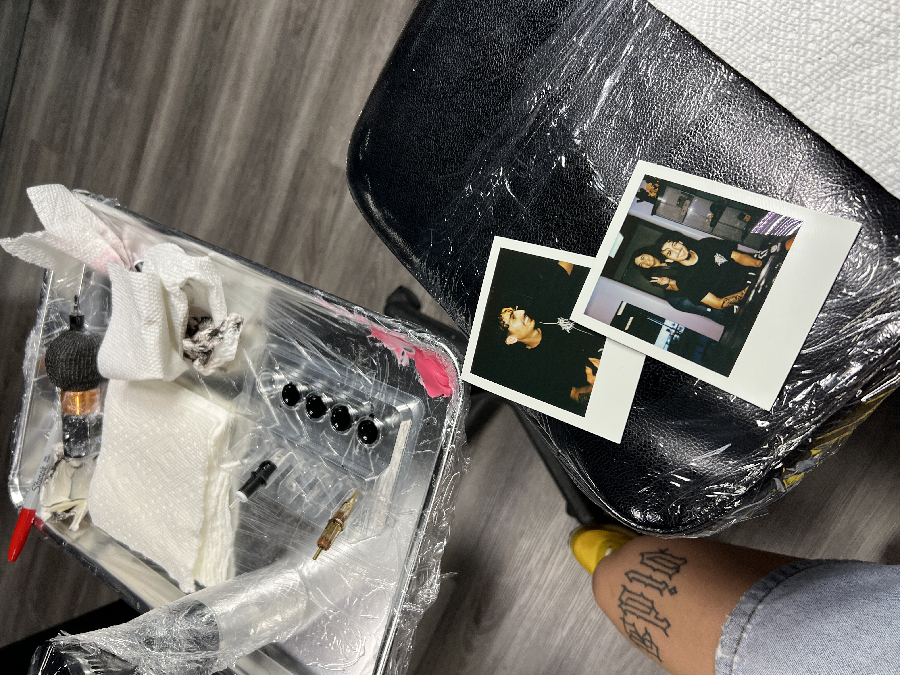
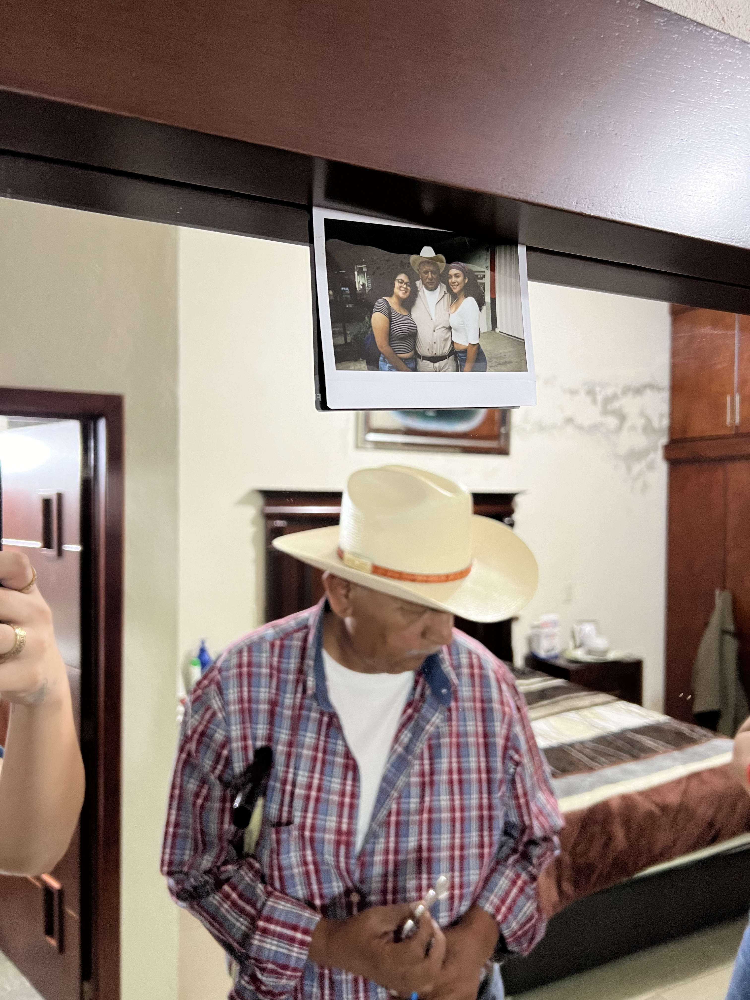
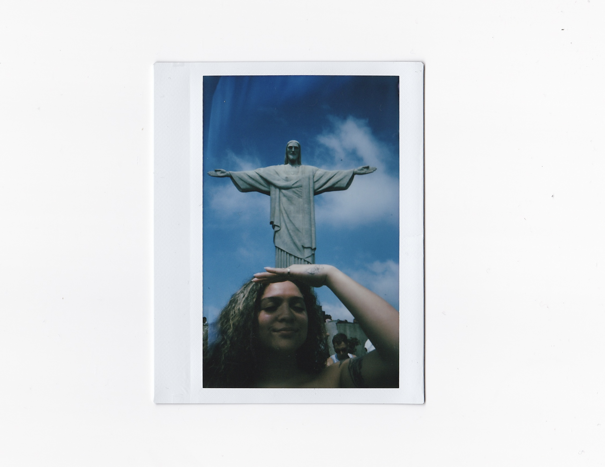

My 29th Solo Birthday Celebration. For my birthdays, I always try to make them special by enjoying my solitude. I'll go on an adventure with only my personal company, doing this give me the chance to reflect on my life and appreciate the simple things. In the polaroid above, I went on a solo trip on a hot air balloon.

Bez is my friend and my favorite tattoo artist. I enjoy getting tattoos from him because he is very talented and understanding. I also appreciate his creativity and attention to detail. He's based in San Diego, but also works with clients in Los Angeles.

My Heart and my old man. He's been a huge influence in my life, and I cherish the time we spend together. Although he's gone, his memory lives on in my heart. I still struggle with the idea of losing him, but I know he's always with me in spirit. Mi viejito hermoso, hasta que nos veamos de nuevo.

I enjoy traveling to many different countries. I've been to so many remarkable places and experienced various cultures. I'm also grateful to have taken polaroids to capture memories. This polaroid is from my trip to Brazil.
Thank you for your time! I hope you enjoyed.
Fun Facts About Me
I have a collection of film and polaroid cameras. I have an extensive collection of polaroids, about 1200+.